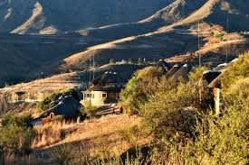
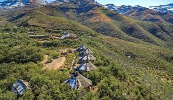
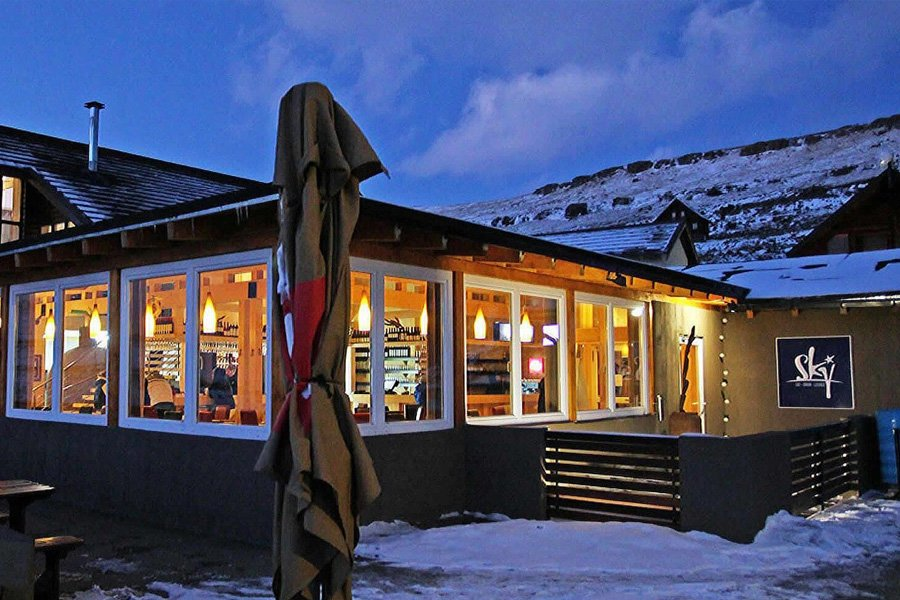

About The Event
The Afriski Winter Sports Events is an exhilarating celebration adventure in Lesotho.
It brings together athletes, tourists, and locals for thrilling competitions and unforgettable experiences.
Every year the event showcases spectacular snow-covered landscapes and cuttinf-edge ski technology.
Visitors enjoy live music, local cuisine, and night-time ski parties that light up the Maluti Mountains.
History of Afriski Mountain Resort
Afriski Winter Sports Event, located in the Maluti Mountains of Lesotho
Has a rich history dating back to the 1960s when it was founded by the Maluti Ski Club.
After years of development, the resort officially opened its doors to the public in 2002.
Since then, Afriski has grown to beocome a popular winter sports destination, offering skiing and snowboarding opportunities on its 1km slope. The resort has undergone expansions and improvements over the years, enhancing the exprience for visitors.
The resort has hosted numerous international ski championships, drawing world-class athletes every season.
Its modern facilities inspires new generations of skiers to chase adventure in Africa's highest peaks.
The resort continuously upgrades its slopes to provide safer and more exciting experiences for all visitors.


Significance of Afriski Mountain Resort
Afriski plays a vital role in promoting winter sports and tourism in Lesotho.
As one of the few ski resorts in Southern Africa, it attracts visitors from countries like South Africa, boosting the local economy and supporting outdoor enthusiasts. The event also fosters a sense of community among participants and promotes the country's natural beauty. Additionally, Afriski provides opportunities for local guides, instructors, and businesses, contributing to the region's development.
The resort creates jobs for local communities and funds development projects in the region.
It also serves as a training hub for aspiring African ski athletes aiming for global competitions.
Afriski's presence puts Lesotho on the world map as an exciting winter-sports destination.
The resort promotes eco-friendly practices to preserve the natual beauty of the Maluti Mountains.
Cultural festivals held at Afriski blend traditional Lesotho music with modern ski celebrations.
Its success inspires other African nations to develop their own winter-sport facilities.

Target Tourists
- Adventure seekers & ski enthusiasts
- International and local tourists interested in cultural experiences
- Families looking for unique holiday experiences
These visitors seek thrilling slopes, breathtaking views, and authentic Lesotho hospitality
They enjoy combining ski adventures with cultural tours of nearby villages and heritage sites.
Luxury amenities and personalized service make Afriski attractive to high-end travelers.
The resort offers special packages tailored to groups, families, or solo adventure seeker.